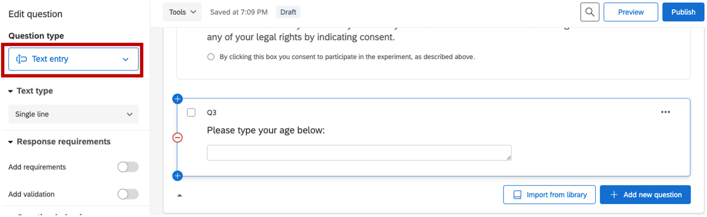
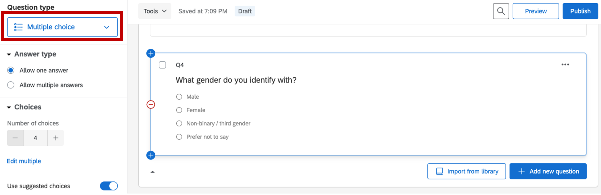

Chapter 4 Consent: Implementing consent form and demographics
Below is the standard York University consent form template. We will be implementing this into our experiment today.
Informed Consent Form – Name of Study
Study name: Include the study name.
Purpose of the research: Include a statement about the purpose of the research. Include a statement indicating how the research will be conducted, presented and reported.
What you will be asked to do in the research: Include a statement regarding the role and/or responsibilities of the research participants. Include a statement regarding the estimated time commitment for the participation. If inducements will be offered, indicate them here.
Risks and discomforts: Include a statement regarding any real or perceived risks or potential discomfort that may result from participation in the research. If there is a possibility of harm or discomfort it must be described and the mitigation methods must be indicated.
Benefits of the research and benefits to you: Include a statement regarding any benefits of the research as well as benefits to the research participants.
Voluntary participation: Include the following required text: “Your participation in the research is completely voluntary and that participants may choose to stop participating at any time. Indicate that a participant’s decision not to continue participating will not influence their relationship or the nature of their relationship with researchers or with staff of York University either now or in the future.”
Withdrawal from the study: Include the following required text: “You may stop participating in the study at any time, for any reason, if you so decide. Your decision to stop participating, or to refuse to answer particular questions, will not affect your relationship with the researchers, York University, or any other group associated with this project. In the event that you withdraw from the study, all associated data collected will be immediately destroyed wherever possible.” If you are offering inducements, the following text is also required: “If you decide to stop participating, you will still be eligible to receive the promised pay for agreeing to be in the project“.
Confidentiality: Indicate whether or not the interview documentation/recording of the participant will be associated with identifying information. Indicate how the data will be collected (e.g. handwritten notes, video/audio tapes, digital device, etc.). Indicate how the data will be stored, who will have access to it, and that it will be stored securely. Indicate how long the data will be stored and whether or not it will be destroyed after the study, and how it will be destroyed. If the data will not be destroyed, indicate where and how it will be archived. Include the following required text: “Confidentiality will be provided to the fullest extent possible by law.”
Questions about the research? Indicate that if a research participant has questions about the research in general or their role in the study that they should contact the researcher or their supervisor. Provide the supervisor’s name and telephone number and/or email address. Indicate that the graduate program office may also be contacted. Provide the contact information for the graduate program office. Include the following required text: “This research has been reviewed and approved by the Human Participants Review Sub-Committee, York University’s Ethics Review Board and conforms to the standards of the Canadian Tri-Council Research Ethics guidelines. If you have any questions about this process, or about your rights as a participant in the study, your may contact the Senior Manager and Policy Advisor for the Office of Research Ethics, 5th Floor, York Research Tower, York University, telephone 416-736-5914 or e-mail ore@yorku.ca”
Legal Rights and Signatures: By checking the box below you consent to participate in the research project entitled: –name of project– conducted by –name of investigator–, and indicate that you have understood the nature of this project and wish to participate. You also approve that the data obtained in the experiment might be uploaded to an open external repository to promote collaborative scientific efforts. The data will be anonymized and your identity will not be revealed. You are not waiving any of your legal rights by indicating consent.
4.1 Adding consent form through Qualtrics
Sign into Qualtrics, Create a new project –> Survey
- The first question will set up the participant to input their unique identification number (Participant ID). For instance, participants coming from SONA would put in their URPP code. This is important to annonymously keep track of participants and their data.
Figure 4.1: identification code, Qualtrics
- The next question will be the consent form. This question should be in a multiple choice format with only one choice, and forced response requirement. Setting up this way requires the participant to actively interact with the consent form (click to consent) in order to move to the experiment.
Figure 4.2: consent form, Qualtrics
The next two questions are there to collect demographic informaiton, so they are optional.
- Collecting age information

Figure 4.3: age information, Qualtrics
- Collecting gender information

Figure 4.4: gender information, Qualtrics
At the end of the survey, we want to redirect the participant to the experiment. Select End of Survey –> Redirect to URL: paste the link of your experiment in the box below (will be edited in Chapter 5 for automatic crediting).
Figure 4.5: end of survey, Qualtrics
Benefit: automatic crediting, clean presentation. Drawback: paid through institutional license
4.2 Adding consent form through Google Forms
Sign into Google Forms –> Start a new Blank form
Q1: Here participants would need to paste their identification codeFigure 4.6: identification code, Google Form
Figure 4.7: consent form, Qualtrics
Figure 4.8: age & gender information, Google Form
Figure 4.9: end of survey, Google Form
Pro: Free. Clean presentation, keeps demographics and consent information separate from data. Con: participants need to click on link to go to experiment. Manual crediting for participation.
4.3 Adding consent form through PsychoPy
Pro: Free Con: looks very chunky, data is together with demographics information.